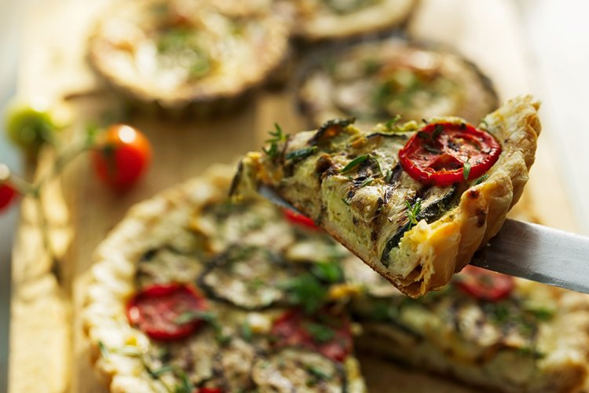
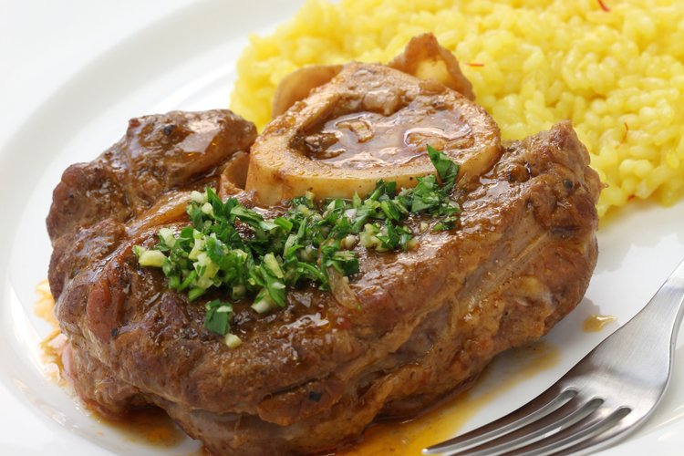

150 grs de aceite de oliva virgen extra Hojiblanca
Para el relleno:
1 kg de carne de ternera picada arreglada
2 dientes de ajo
1 cebolla mediana
2 tomates grandes y maduros
1 vaso de vino blanco
1 cucharadita de orégano
1 cucharadita de azúcar
1 cucharadita de pimentón dulce
Sal al gusto
Pimienta negra molida al gusto
Aceite de oliva virgen extra Picual
Para arreglar la carne:
1 diente de ajo
1 cebolla mediana
1 huevo
2 rebanadas de pan
120 ml de leche
Sal al gusto
Pimienta negra molida al gusto
PREPARACIÓN
Preparamos la masa poniendo en primer lugar la harina en un cuenco y hacemos un hueco
en el centro.
Disolvemos la levadura en el agua y la vertemos dentro del hueco de la harina.
Espolvoreamos la sal por encima de la harina y empezamos a amasar. Vamos añadiendo el
aceite de oliva virgen extra Hojiblanca de forma gradual mientras amasamos para que se
incorpore. Pasamos la mezcla a una superficie lisa enharinada y seguimos trabajando
hasta que la masa nos quede con una textura lisa y elástica. Hacemos con ella una bola,
la colocamos en el cuenco espolvoreado de harina y la cubrimos con un trapo de algodón
durante 45 minutos o hasta que haya duplicado su volumen.
Mientras, arreglamos la carne empezando por poner en un recipiente las rebanadas de pan
a remojo en la leche. Echamos la ternera en un cuenco y le agregamos el diente de ajo
pelado y muy picado. Cortamos la cebolla en trozos muy pequeños y junto al huevo se los
agregamos a la carne. Escurrimos el pan y lo echamos al cuenco, salpimentamos y
mezclamos todo muy bien hasta obtener una masa homogénea. Lo tapamos con papel
transparente y lo llevamos a la nevera. Reservamos.
A continuación, preparamos la salsa para el relleno. Pelamos y picamos los dientes de
ajo y los echamos en una sartén honda al fuego con un poco de aceite de oliva virgen
extra Picual para que se frían. En el momento en el que se empiecen a dorar, añadimos la
cebolla picada en trozos muy pequeños, bajamos el fuego y dejamos que se pochen poco a
poco.
En cuanto la cebolla coja color, agregamos el pimentón dulce, le damos unas vueltas y
agregamos el vino blanco. Cuando se haya evaporado el alcohol, echamos los tomates
pelados y rallados y lo condimentamos con un poco de sal, pimienta negra molida, orégano
y la cucharadita de azúcar para contrarrestar la acidez natural del tomate. Removemos
para que se mezclen bien todos los ingredientes y dejamos que se cocine durante unos 20
minutos a fuego bajo.
Tras ese tiempo, añadimos la carne de ternera y la freímos mientras la vamos aplastando
con un tenedor para que nos quede suelta. Corregimos de sal y pimienta y reservamos en
un plato para que se vaya enfriando.
Encendemos el horno a una temperatura de 180º para que se vaya calentando mientras
montamos la empanada de ternera.
Dividimos la masa en dos partes y estiramos una sobre una superficie lisa enharinada con
la ayuda de un rodillo. Cuando tenga unos 3 milímetros de grosor, forramos con ella un
molde previamente engrasado con un poco de aceite de oliva. Echamos dentro de la masa el
relleno de carne de ternera repartiéndolo de forma pareja.
Estiramos la otra mitad de masa y cubrimos el relleno. Hacemos un repulgue en los
bordes de la empanada para que se sellen y no se salga el relleno.
Con un tenedor pinchamos la superficie de la empanada de ternera para que mientras se
cocina salgan los vapores de su interior.
Finalmente, pintamos la empanada con un poco de huevo batido ayudados con un pincel y la
llevamos a hornear durante unos 45 minutos o hasta que veamos que ha adquirido un bonito
color dorado.
Quiche de calabacines y requesón

INGREDIENTES
Para la masa:
200 grs de harina integral
90 ml de agua mineral
1/4 cucharadita de pimienta negra molida
1 cucharadita de sal marina
5 cucharadas de aceite de oliva virgen extra Hojiblanca
Para el relleno:
2 calabacines verdes
1 cebolla
Tomates cherry
300 grs de requesón
3 huevos
Orégano al gusto
Ajo en polvo al gusto
Cúrcuma al gusto
Sal al gusto
Pimienta negra molida al gusto
Aceite de oliva virgen extra
Hierbas frescas
PREPARACIÓN
Comenzamos preparando la masa para hacer la base de la quiche. Ponemos en un cuenco la
harina y hacemos en el centro un hueco en el que echamos el aceite de oliva virgen extra
Hojiblanca, el agua, la pimienta negra molida y la sal marina. Mezclamos poco a poco la
harina con el resto de ingredientes ayudados con una cuchara.
Cuando tengamos más o menos una mezcla homogénea, la volcamos sobre la superficie de
trabajo enharinada y la amasamos durante unos minutos. Hacemos con la masa una bola, la
cubrimos con papel transparente y la llevamos a la nevera a que repose mientras hacemos
el relleno.
Lavamos los calabacines para cortarlos después en rodajas muy finas que salpimentamos.
Ponemos una sartén o plancha al fuego con un poco de aceite de oliva virgen extra y,
cuando esté bien caliente, hacemos las rodajas de calabacín a la plancha por las dos
caras. Según se van haciendo, las vamos retirando a un plato y reservamos.
En esa misma sartén, añadiendo un poco más de aceite si fuera necesario, pochamos la
cebolla cortada en juliana fina durante unos minutos o hasta cuando empiece a cambiar de
color, momento en el que la retiramos del fuego y reservamos.
Mientras, ponemos en un cuenco los tres huevos junto al requesón desmigado. Echamos la
sal y la pimienta negra molida además de un poco de orégano, cúrcuma y ajo en polvo. Lo
batimos bien con unas varillas hasta que todos los ingredientes estén bien integrados.
Incorporamos a la mezcla de requesón y huevo la cebolla pochada y la mitad de las
rodajas de calabacín y lo mezclamos bien.
Encendemos el horno a una temperatura de 180º.
A continuación, sacamos de la nevera la masa y la extendemos sobre la superficie de
trabajo ligeramente enharinada hasta que tenga un grosor de unos 3 milímetros y el
tamaño del molde que vayamos a usar.
Cubrimos el molde con la masa estirada y recortamos el sobrante de los bordes.
Vertemos el relleno sobre la masa repartiéndolo de forma pareja. Con las rodajas de
calabacín que habíamos reservado, cubrimos toda la superficie de la quiche. Cortamos
unos tomates cherry a la mitad y los distribuimos por la tarta.
Espolvoreamos unas hierbas frescas a nuestra elección, el tomillo y el romero le van
estupendamente, y llevamos la quiche de calabacines y requesón a que se cocine en el
horno durante unos 30 minutos.
Ossobuco a la Milanesa con risotto al azafrán

INGREDIENTES
4 trozos de ossobuco
1 cebolla
50 grs de harina de trigo
1 vaso de vino blanco
500 ml de caldo de carne
Pimienta negra molida al gusto
Sal al gusto
Aceite de oliva virgen extra Picual
Para la gremolata:
Ralladura de medio limón
Perejil fresco al gusto
2 dientes de ajo
Para el risotto de azafrán:
300 grs de arroz arborio
5 hebras de azafrán
1 cebolla
1,5 l de caldo de pollo
Sal al gusto
70 grs de queso parmesano rallado
Aceite de oliva virgen extra Arbequina
PREPARACIÓN
Comenzamos picando en trozos muy pequeños la cebolla. Les quitamos el exceso de grasa de los trozos de ossobuco, los salpimentamos y los enharinamos.
Ponemos un poco de aceite de oliva virgen extra Picual en una sartén al fuego y, cuando esté caliente, echamos la cebolla para que se cocine a fuego medio hasta que se ponga transparente.
En ese momento, ponemos los trozos de ossobuco y los sellamos bien por todos los lados.
Echamos un poco de caldo de carne y el vino blanco, le damos unas vueltas para desglasar el fondo y en cuanto empiece a hervir, tapamos la cazuela y bajamos el fuego al mínimo para que se haga poco a poco. Tardará en cocinarse alrededor de una hora u hora y cuarto. Durante este tiempo, lo vigilaremos de vez en cuando, echando un poco más de caldo en el caso de que veamos que se consume demasiado la salsa.
Mientras tanto, vamos a preparar la gremolata. Picamos de forma muy fina los dientes de ajo y el perejil fresco. Rallamos medio limón y lo mezclamos con el ajo y el perejil hasta conseguir una mezcla homogénea. Reservamos en lugar fresco.
Cuando quede una media hora para que se termine de hacer el ossobuco, nos ponemos a preparar el risotto al azafrán.
Colocamos una cazuela al fuego con el aceite de oliva virgen extra Arbequina para que se caliente mientras picamos la cebolla en trozos lo más pequeños posibles.
Con el aceite caliente, echamos la cebolla junto con un poco de sal y dejamos que se cocine hasta que se ponga transparente.
chamos entonces el arroz junto a las hebras de azafrán y removemos mientras se sofríen unos minutos. Cuando el arroz se ponga brillante, añadimos un poco del caldo de pollo caliente. Lo llevamos a ebullición sin dejar de remover en ningún momento y vamos echando caldo de pollo según veamos que lo va necesitando. Se trata de que el arroz absorba poco a poco el caldo y vaya soltando el almidón.
Una vez que el arroz esté hecho, separamos la cazuela del fuego y echamos el queso parmesano rallado. Removemos y dejamos reposar.
Con todo listo, comprobamos si el ossobuco está listo y, si así es, apagamos el fuego.
A la hora de servir, colocamos en cada plato un trozo de ossobuco con una ración generosa de gremolata por encima. Lo regamos todo con un poco de salsa y lo acompañamos con el risotto de azafrán.